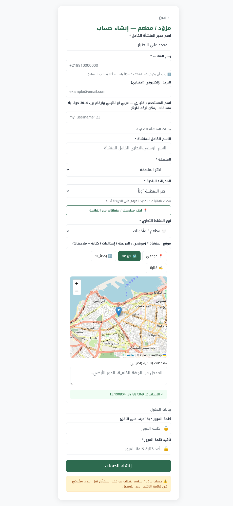
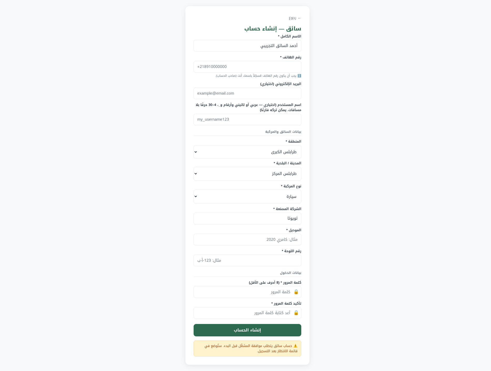

تقرير إصلاح عطل التسجيل (المزوّد + السائق) ومشكلة الكاش
عطلٌ حقيقيّ — لا مجرّد كاش — شُخِّص بإعادة إنتاج حيّة، أُصلِح بطبقتين، وأُثبِت بالصور على tawanow.com · 2026-06-23
🔴 السبب: /geo/reverse 401 → توجيه للرئيسيّة
✅ الإصلاح: geo عامّ + حارس مُعترِض
✅ مُثبَت حيّاً (مزوّد + سائق)
🟡 الكاش: فحص فوريّ + كلّ 60 ثانية
٠) لوحة النتائج
عطل حقيقيّ
ليس كاشاً — أُعيد إنتاجه بمتصفّح نظيف
✅ مزوّد
الخريطة تعمل · الدبّوس + العنوان · لا توجيه
✅ سائق
Enter لا يُغلق · القوائم تعمل
🟡 الكاش
10 دقائق → 60 ثانية + فحص فوريّ
🔒 آمن
FIN-COR + nginx لم تُمَسّ · byte-identical
١) ماذا بلّغتَ عنه
الشكوى: «عند إنشاء حساب مزوّد أو سائق، أذهب إلى الخريطة وأختار موقعاً — فتُغلق شاشة إنشاء الحساب وترجع إلى الصفحة الرئيسيّة». + «المتصفّح يحتفظ بالنسخة القديمة ولا يُظهر التحديث».
🟦 لم أُخمّن. فتحتُ الموقع الحيّ بمتصفّح نظيف (بلا كاش)، وأعدتُ إنتاج العطل خطوةً بخطوة، وقرأتُ سجلّ المتصفّح لأعرف السبب القاطع — قبل أيّ إصلاح.
٢) التشخيص — السبب الحقيقيّ (دليل قاطع)
عند النقر على الخريطة لاختيار الموقع، كشف سجلّ المتصفّح هذا التسلسل:
[ERROR] 401 (Unauthorized) @ /api/geo/reverse?lat=32.88…&lng=13.19… ← النقر على الخريطة
[ERROR] 401 (Unauthorized) @ /api/auth/refresh ← محاولة تجديد فاشلة
[ERROR] 401 (Unauthorized) @ /api/auth/refresh
│
▼ ثمّ: تسجيل خروج تلقائيّ + توجيه إلى /welcome (الشاشة «تُغلق»)
السبب بلغة بسيطة: اختيار الموقع على الخريطة يستدعي خدمة «ترجمة الإحداثيّات إلى عنوان» (/geo/reverse). هذه الخدمة كانت تتطلّب تسجيل دخول — لكنّك أثناء إنشاء الحساب لم تسجّل الدخول بعد! فيردّ الخادم 401 (غير مُصرّح)، فيظنّ التطبيق أنّ جلستك انتهت → يُخرجك ويُعيدك للرئيسيّة.
🟦 لهذا كان يحدث في المزوّد (يستخدم الخريطة) — أمّا السائق فيستخدم قوائم منطقة/مدينة (لا خريطة)، وخطره كان مختلفاً: مفتاح Enter يُرسل النموذج مبكراً.
٣) الإصلاح — طبقتان
| الطبقة | التغيير | لماذا |
|---|
| الخلفيّة (الجذر) | جعل /geo/reverse · /geo/geocode · /geo/eta عامّة (إزالة اشتراط الدخول) | التسجيل يحتاجها قبل الدخول · خدمات ترجمة عناوين غير حسّاسة (محميّة بحدّ المعدّل بالـIP) |
| الواجهة (دفاع عميق) | مُعترِض الشبكة لا يُخرج/يُوجّه عند أيّ 401 من /geo/* | حتى لو ردّت خدمة عناوين 401 يوماً، لا تَخطف جلستك — تُتجاهَل بصمت فقط |
الفرق — قبل وبعد
قبل: نقر الخريطة → /geo/reverse → 401 → refresh → 401 → خروج + توجيه /welcome ✗ الشاشة تُغلق
بعد: نقر الخريطة → /geo/reverse → 200 → العنوان يُملأ تلقائيّاً ✓ الشاشة تبقى
فائدة عمليّة: بما أنّ الجذر في الخلفيّة، التسجيل صار يعمل حتى على النسخة القديمة المخزّنة في متصفّحك — لا حاجة لمسح الكاش لتجربته.
٤) الإثبات بالصور (حيّ على tawanow.com)
مزوّد ✅ بعد الإصلاح — الخريطة تعمل والشاشة تبقى
🟦 ملأتُ الاسم «محمد علي الاختبار» → ذهبتُ للخريطة → نقرتُ لاختيار الموقع. النتيجة: دبّوس أزرق وُضِع، العنوان تعبّأ تلقائيّاً، الاسم بقي محفوظاً، والشاشة لم تُغلق.

تسجيل المزوّد — الدبّوس على الخريطة + العنوان التلقائيّ + النموذج سليم (لم يُغلق)
سائق ✅ يعمل — Enter لا يُغلق + قوائم المنطقة/المدينة
🟦 السائق لا يستخدم خريطة (قوائم منطقة/مدينة). اختبرتُ خطره: ضغطتُ Enter في حقل — الشاشة بقيت والبيانات لم تُمسَح. وسلسلة «طرابلس الكبرى → طرابلس المركز» عملت.

تسجيل السائق — الاسم «أحمد السائق التجريبي» + المنطقة/المدينة + الشركة «تويوتا» محفوظة، النموذج سليم
| الاختبار الحيّ | المزوّد | السائق |
|---|
| الشاشة بقيت (لم تُغلق/تُوجَّه) | ✅ /register | ✅ /register |
| البيانات المُدخَلة بقيت محفوظة | ✅ الاسم | ✅ الاسم + الشركة |
| اختيار الموقع | ✅ دبّوس + عنوان تلقائيّ (/geo/reverse=200) | ✅ قائمة المنطقة→المدينة |
٥) مشكلة الكاش — لماذا «لا يظهر التحديث»
| السبب | الإصلاح |
|---|
| لا فحص فوريّ عند فتح/تحديث الصفحة (هذا سبب «لا يظهر») | ✅ فحص فوريّ عند كلّ تحميل → زرّ «تحديث متاح» يظهر مباشرةً |
| الفحص الدوريّ كان كلّ 10 دقائق | ✅ صار كلّ 60 ثانية (آمن: يفحص التبويب المرئيّ فقط) |
لماذا ليس تلقائيّاً 100%؟ الوضع «اسأل ثمّ حدّث» مقصود: التحديث التلقائيّ الكامل كان يَمسح نماذج الدفع/التسجيل قيد التعبئة (نفس مشكلتك!). فالآن يظهر زرّ «تحديث متاح» خلال ~60 ثانية، وتضغطه وقتما تشاء — دون أن يُضيّع عملك.
🟦 لجلب النسخة الجديدة على متصفّحك مرّة واحدة: أغلق كلّ تبويبات الموقع ثمّ افتحه — أو امسح بيانات الموقع (في كروم: DevTools → Application → Clear site data). بعدها تظهر التحديثات تلقائيّاً خلال 60 ثانية.
٦) السلامة + الملفّات
| الفحص | النتيجة |
|---|
| منشور ومُتحقَّق حيّاً | ✅ /geo/reverse=200 · /=200 · /api=200 · 6/6 صحّيّة · 0 tracebacks |
| المزامنة | ✅ byte-identical (المحلّي = الإنتاج · backend 74a89f96 · web 19c40ce2) |
| الحماية | ✅ FIN-COR ثابت · nginx لم يُمَسّ (938310a0) · لا migration |
| ملفّات غُيِّرت | خلفيّة: geo_router.py · واجهة: api/client.ts · PwaReloadPrompt.tsx |